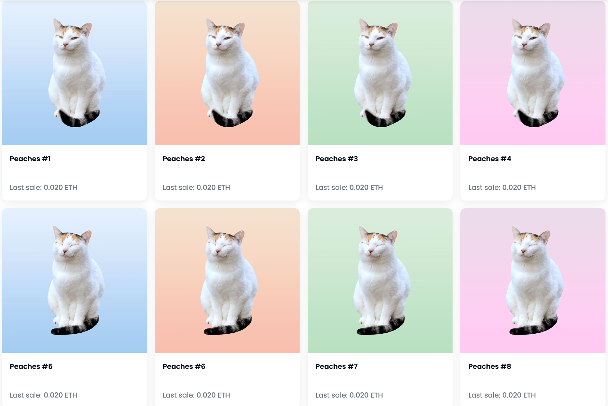

Peaches the Calico Cat NFTs
Photography + Digital Art NFTs, 2022
Peaches was one of Duke University’s calico cats and campus icons. Unfortunately, she was fatally struck by a car on Aug 17, 2022. I created this collection for a good cause in her honor.
Peaches the Calico Cat collection contains 40 NFTs based on photos I’ve captured of Peaches over my college years. I was blessed to live nearby Peaches’ favorite spot on campus. I’d give her plenty of pets and cuddles whenever I saw her around — she has even ventured into my dorm room a few times!
All proceeds from sales (including 5% creator fees, excluding 2.5% platform fee and variable gas fees) were donated to a combination of Peaches’ memorial fund, Mamabean’s (another Duke resident cat) wellness fund, and individual animal shelters. Overall, the project raised $600+ dollars!
